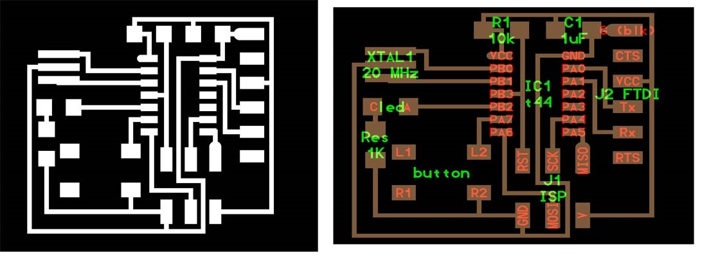

Week 3
The Electronics Week

Week 3: The Electronics Week
Day 10:Into the Electronics Week
The Electronics and Programming Is one of the core part in the fab academy programme and through the pre fab academy our trainers are trying to introduce us to the basics. Being a Civil Engineer Francisco told us how he started learning electronics and how he mastered it. It was really an inspiration for me as I had the fear of whether I would be able to catch up with others. If I quote Francisco “Electronics is not a one step process. It is a permanent learning process. Depth is infinite The more you give the more you obtain”.
So todays assignment is to Fabricate the Fab ISP. The participants were divided into group of 2. Myself and Vinod Kumar . Before starting off with the fabrication Francisco showed us how to prepare the Roland Modela bed and the sacrificial layer.Preparing the modela bed
Remove the modela bed from the milling machine. Place a single side copper circuit board carefully towards one side of the bed and stick it firmly to the bed using double sided tapes. So this forms the Sacrificial layer . Then he took the circuit board which is used for milling and on the rear side of the board he applied the double sided tapes. One thing to be made sure is that there shouldn’t be air bubbles once you place the tape. Carefully place the circuit board on top of the sacrificial layer and ensure that there are no gaps in between. A slight change in the board position causes notable difference in the circuit. Now you are ready to mill.
Fabricating the ISP
ISP means In System Programmer. The ISP that I am going to fabricate here is the ISP designed by Prof Neil Gershenfeld. The design was downloaded from the fab academy website archives. http://academy.cba.mit.edu/classes/electronics_production/index.html Download the board, traces and interior of the fab ISP. Like in the vinyl cutter, the milling is made using the fab module.Preparing the Roland Modela> For milling purpose here I use 2 drill bits. 1/8 and 1/32 . Carefully remove the drill bit from the modela (if any) and place the required 1/8 . After loading the bit I moved the drill head to my origin position. After that I lowered the drill bit carefully until it touches the circuit board. So now its in position. If needed tighten the bit holder and make sure there is sufficient space left for the drill to move further downwards.
So for printing the PCB the instructions are similar to the vinyl cutting, the difference being the png image used for milling has dz the third axis for the depth. Roland modela work flow here. After milling the traces, to complete the PCB design I also have to mill the borders.So I am following the same procedures but with different image. So now I am having my PCB ready. Next Step is to remove the my portion of the circuit from the board. By using a pointed screw driver try removing the board by slightly lifting it upwards. I tried it from all the sides and finally removed the board.
Its Soldering time
Before soldering Francisco suggested to write down all the components required in my note. After writing it take the necessary components from the Lab inventory and place it in the note book. As shown below. This is to avoid confusion.For me I am not at all an expert in soldering. In my college life I haven’t done it. So it was worth trying. For me it took around 2.5 hrs to complete stuffing my circuit board. Appreciate, Francisco’s patience sitting near me watching the never ending soldering.
Programming the Fab ISP
To programme the ISP you require avrdude (latest version), a mini usb cable and the firmware which I downloaded from this link.Open terminal Enter the following one by one
make clean make hex
sudo make fuse
sudo make program After progrramming remove one solder jumper.
Day 11: Missed the day completely
12: Oh I missed Kokopelli
From the dayS one itself Francisco was saying about Kokopelli, the PCB designer software using phython codes. Only few people use this software. Unfortunately what happened was I missed the whole day of Kokopelli. Today morning when Francisco saw me he said ”Varun you missed a lot yesterday”. I realized that it was a big loss but I had no other choice. So yesterday the assignment was to download the hello world board. Modify it by adding a resistor, a button and a LED. 
Today it was all about electronics Programming. Francisco explained about various electronics programming namely Embedded programming and Interface programming. Embedded programming means uploading program into micro controllers whereas Interface programming means programming to establish communication between mobile, PC and embedded system.
Programming study flow
From Arduino to C and then to Assembly.
If Arduino takes 100 cycles to perform operation, C only takes 10 and only 1 in case of Assembly. The difficulty level increase from going to Arduino towards Assembly but the efficiency increases.In Arduino programming it has two parts Setup and Loop.
In Arduino programming it has two parts Setup and Loop.
Program 1: Blinking the LED in the hello world board.
Open Arduino IDE 1.6. Add ATTiny 44 to the board manager.
For blinking the led I selected the example program. Always refer the datasheet of ATTiny44. Download datasheet here. The Code that I got is
void setup() {
pinMode(8, OUTPUT);
}
void loop() {
digitalWrite(8,HIGH);
delay(1000);
digitalWrite(8,LOW)
delay(1000)
}
Program 2: Lighting up the LED on pressing the push button.
Here I have to change only few codes to enable the LED glow on the push of the button. In the setup part enable pin 7 as high . This is to activate the pull up resistor.
void setup() {
pinMode(8, OUTPUT);
pinMode(7,INPUT);
digitalWrite(7,HIGH); // Activating the internal pullup resistor
}
// the loop function runs over and over again forever
void loop() {
if (digitalRead(7)){
digitalWrite(8, LOW); // turn the LED on (HIGH is the voltage level)
}
else {
digitalWrite(8, HIGH); // turn the LED off by making the voltage LOW
}
} Program 3: Setting up Serial Communication
The objective is to setup communication with the hello world board and my laptop. Here I need to turn on the LED on pressing a character in my keyboard. For that Serial Communciation has be established. For that I need to add a new header to my program. #include
#include
const byte rxPin = 0;
const byte txPin= 1;
SoftwareSerial mySerial = SoftwareSerial(rxPin, txPin);
// the setup function runs once when you press reset or power the board
void setup() {
// initialize digital pin 13 as an output.
pinMode(8, OUTPUT);
pinMode(7,INPUT);
digitalWrite(7,HIGH);
// define pin modes for tx, rx:
pinMode(rxPin, INPUT);
pinMode(txPin, OUTPUT);
// set the data rate for the SoftwareSerial port
mySerial.begin(9600);
}
// the loop function runs over and over again forever
void loop() {
//listen to serial port
if (mySerial.read()=='c'){
digitalWrite(8,HIGH);
delay(1000);
//digitalWrite(8,LOW)
//delay(1000)
}
else{}
if (digitalRead(7)){
digitalWrite(8, LOW); // turn the LED on (HIGH is the voltage level)
}
else {
digitalWrite(8, HIGH); // turn the LED off by making the voltage LOW
mySerial.print("print");
}
}
After burning the above program download gtkterm from the Ubuntu Software center. Open it and configure its port to ttyUSB0. So now when I press “c ” in my keyboard it turns on the LED. Francisco also told us to download the this link of MIT App Inventor which helps to interface smartphones easily. Its really a cool software , I downloaded it and has seems simple and need to try it out.
Day 4: Video conferencing: The window to the World
Video conferencing is a vital part in the fablab ecosystem. “This the window through which the world is going to see you and get to know what others are doing” I quote Francisco. Francisco is trying to setup the video conferencing system exclusive for the fab lab community.
http://video.cba.mit.edu/
The minimum upload speed required for the video conferencing is 1Mbps. The platform used for video conferencing is called Ekiga.
Ekiga (free: Linux, Windows)
installation:
sudo apt-get install ekiga
configuration:
skip account setup
Edit → Preferences → Video → Devices → Size → 704x576
Edit → Preferences → Video → Devices → Maximum bitrate → 1000
Edit → Preferences → Video → Codecs → H264
In the video conference system of MIT there are mainly 1 fablab and 4 classrooms available, each of them are protected by PIN. Booking of rooms shall be made in advance Once you enter the system the whole world is watching. So always remember to mute the mic and to unmute it only when required. Francisco made a trial call and talked to Fablab Barcelona. We all talked to them. In the system we saw many labs at a time some with people busy doing many things and some with no one. The Fab Academy classes are run through this video conferencing platform .For the 6 months of fab academy class by Prof Neil will be on Wednesday’s at 9 am, PST. For India it will be 7:30 pm. The classes will have a duration of 3 hrs and assignment will be given at the end which has to be completed in one week’s time.